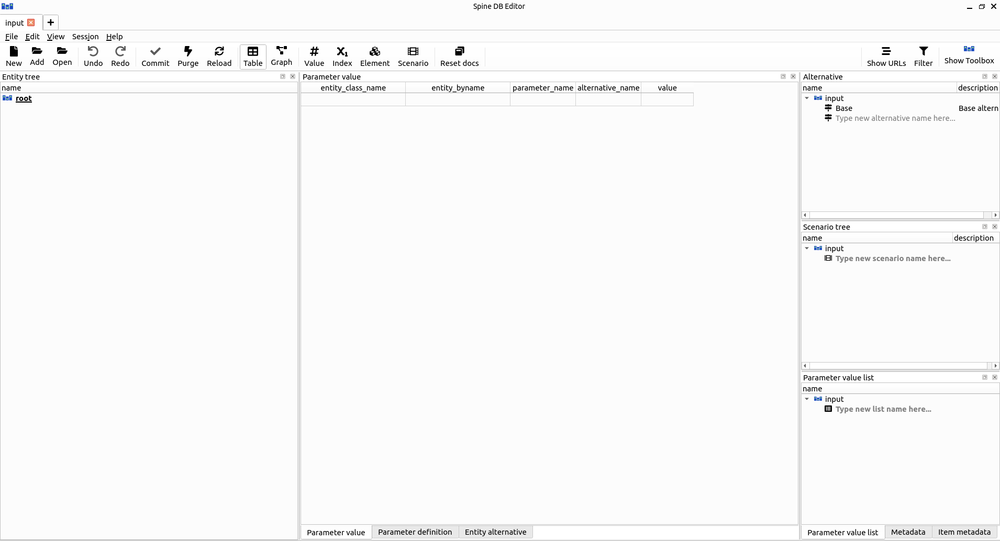
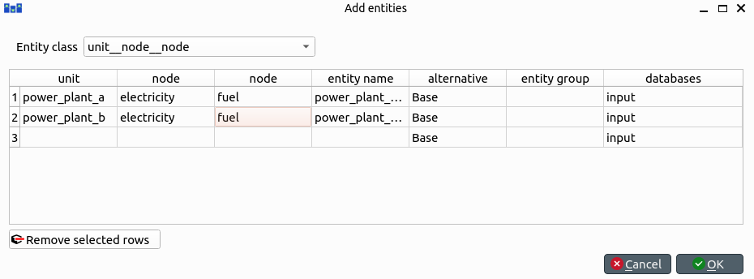

Simple System tutorial
Welcome to Spine Toolbox's Simple System tutorial.
This tutorial provides a step-by-step guide to setup a simple energy system with Spine Toolbox for SpineOpt. Spine Toolbox is used to create a workflow with databases and tools and SpineOpt is the tool that simulates/optimizes the energy system.
Introduction
Model assumptions
- Two power plants take fuel from a source node and release electricity to another node in order to supply a demand.
- Power plant 'a' has a capacity of 100 MWh, a variable operating cost of 25 euro/fuel unit, and generates 0.7 MWh of electricity per unit of fuel.
- Power plant 'b' has a capacity of 200 MWh, a variable operating cost of 50 euro/fuel unit, and generates 0.8 MWh of electricity per unit of fuel.
- The demand at the electricity node is 150 MWh.
- The fuel node is able to provide infinite energy.

Installation and upgrades
If you haven't yet installed the tools or you are not sure whether you have the latest version, please follow the installation/upgrade guides:
- For Spine Toolbox: Spine Toolbox installation guide
- For SpineOpt: SpineOpt installation guide
Guide
Spine Toolbox workflow
The workflow for this tutorial is quite simple: A SpineOpt tool that reads data from an input database, executes the simulation/optimization and writes the results to an output database.
To create the workflow, it is almost as simple as dragging these items (i.e. Data Store and Run SpineOpt) to the Design View and connecting them by dragging arrows between the blocks but there are some things that need to be configured:
The databases need to be initialised. Once you select a database you see the properties panel. Select the dialect of the database. Here we choose sqlite. Then press the button 'new spine db' to create and save the database on your computer (Spine Toolbox will suggest a good folder).
Connecting tools with (yellow) arrows in the Toolbox does not mean that the tools will use these items. The arrows in the Toolbox view make items (databases) available. To let SpineOpt know we want to use these items, we need to go to the properties panel of Run SpineOpt and drag the available items to the tool arguments. The order of the items is first the input, then the output. See below for how the property window should look.

- (optional) The Spine data stores are quite generic. In order for SpineOpt to be able to read the input database, we need to change its format from the Spine format to the SpineOpt format. Luckily we can use templates for this. One of those templates is made available as an item in Spine Toolbox: Load template. The other option is to load templates into the database using the db editor. The templates can also be used to pre-populate the database with some basic components. Here we briefly explain the use of the Load template block and later we show how to import a template and basic components with the spine db editor. To use the Load template block, drag it to the view and connect it to the input database. Just like the Run SpineOpt block we need to drag the available input database to the tool argument.
The result should look similar to this (+/- the Load template block):

That is it for the workflow. Now we can enter the data for the setup of the simple system into the input database, run the workflow and view the results in the output database.
Entering input data
Importing the SpineOpt database template
Download the SpineOpt database template and the basic SpineOpt model (right click on the links, then select Save link as...)
Double click the input Data Store item (or select the 'input' Data Store item in the Design View, go to Data Store Properties and hit Open editor). This will open the newly created database in the Spine DB editor, looking similar to this:

The Spine DB editor is a dedicated interface within Spine Toolbox for visualizing and managing Spine databases. The default view shows tables but for viewing energy system configurations it is nice to see a graph. Open the hamburger menu (or press Alt + F) and press the graph button. The graph view only shows what you select in the root menu and what your selected objects or relationships are connected to.
To import the templates to the database, click the hamburger menu (or press Alt + F), select File -> Import..., and then select the template file you previously downloaded (spineopt_template.json). The contents of that file will be imported into the current database, and you should then see classes like 'commodity', 'connection' and 'model' under the root node in the Object tree (on the left). Then import the second file (basic_model_template.json).
To save our changes, go again to the hamburger menu and select Session -> Commit. Enter a commit message, e.g. 'Import SpineOpt template', in the popup dialog and click Commit.
The SpineOpt template contains the fundamental entity classes and parameter definitions that SpineOpt recognizes and expects. The SpineOpt basic model template contains some predefined entities for a common deterministic model with a 'flat' temporal structure.
Creating objects
Always in the Spine DB editor, locate the Object tree (typically at the top-left). Expand the [root] element if not expanded.
Right click on the [node] class, and select Add objects from the context menu. The Add objects dialog will pop up.
Enter the names for the system nodes as seen in the image below, then press Ok. This will create two objects of class node, called fuel_node and electricity_node.

- Right click on the unit class, and select Add objects from the context menu. The Add objects dialog will pop up.
In SpineOpt, nodes are points where an energy balance takes place, whereas units are energy conversion devices that can take energy from nodes, and release energy to nodes.
- Enter the names for the system units as seen in the image below, then press Ok. This will create two objects of class unit, called power_plant_a and power_plant_b.

To modify an object after you enter it, right click on it and select Edit... from the context menu.
Establishing relationships
Always in the Spine DB editor, locate the Relationship tree (typically at the bottom-left). Expand the root element if not expanded.
Right click on the unit__from_node class, and select Add relationships from the context menu. The Add relationships dialog will pop up.
Alternatively right click the objects in the graph view and add relationships will show the available relationships. Note that this only works when the involved units/nodes/... are visible in the graph view. To make an object visible, simply click on the object in the list of objects/object classes. You can select multiple objects with ctrl or shift.
- Select the names of the two units and their sending nodes, as seen in the image below; then press Ok. This will establish that both power_plant_a and power_plant_b take energy from the fuel_node.

Right click on the unit__to_node class, and select Add relationships from the context menu. The Add relationships dialog will pop up.
Select the names of the two units and their receiving nodes, as seen in the image below; then press Ok. This will establish that both power_plant_a and power_plant_b release energy into the electricity_node.

Right click on the unit__node__node class, and select Add relationships from the context menu. The Add relationships dialog will pop up.
For each of the units enter the unit under unit, electricity_node under the first node and fuel_node under the second node. These relationships will define the relation (or behavior) between the output and input of the unit.

The unit__node__node relationship is necessary to limit the flow (flows are unbound by default) and to define an efficiency. The order of the nodes is important for that definition (see later on). It may seem unintuitive to define an efficiency through a three-way relationship instead of a property of a unit, but this approach allows you to define efficiencies between any flow(s) coming in and out of the unit (e.g. CHP).
Right click on the report__output class, and select Add relationships from the context menu. The Add relationships dialog will pop up.
Enter report1 under report, and unit_flow under output, as seen in the image below; then press Ok. This will tell SpineOpt to write the value of the unit_flow optimization variable to the output database, as part of report1.

In SpineOpt, outputs represent optimization variables that can be written to the output database as part of a report.
Specifying object parameter values
Back to Object tree, expand the node class and select electricity_node.
Locate the Object parameter table (typically at the top-center).
In the Object parameter table (typically at the top-center), select the demand parameter and the Base alternative, and enter the value 150 as seen in the image below. This will establish that there's a demand of '150' at the electricity node.

The alternative name is not optional. If you don't select Base (or another name) you will not be able to save your data. Speaking of which, when is the last time you saved/committed?
Select fuel_node in the Object tree.
In the Object parameter table, select the balance_type parameter and the Base alternative, and enter the value balance_type_none as seen in the image below. This will establish that the fuel node is not balanced, and thus provide as much fuel as needed.

Specifying relationship parameter values
In Relationship tree, expand the unit__from_node class and select power_plant_a | fuel_node.
In the Relationship parameter table (typically at the bottom-center), select the vom_cost parameter and the Base alternative, and enter the value 25 as seen in the image below. This will set the operating cost for power_plant_a.

Select power_plant_b | fuel_node in the Relationship tree.
In the Relationship parameter table, select the vom_cost parameter and the Base alternative, and enter the value 50 as seen in the image below. This will set the operating cost for power_plant_b.

In Relationship tree, expand the unit__to_node class and select power_plant_a | electricity_node.
In the Relationship parameter table, select the unit_capacity parameter and the Base alternative, and enter the value 100 as seen in the image below. This will set the capacity for power_plant_a.

Select power_plant_b | electricity_node in the Relationship tree.
In the Relationship parameter table, select the unit_capacity parameter and the Base alternative, and enter the value 200 as seen in the image below. This will set the capacity for power_plant_b.

In Relationship tree, select the unit__node__node class, and come back to the Relationship parameter table.
In the Relationship parameter table, select power_plant_a | electricity_node | fuel_node under object name list, fix_ratio_out_in_unit_flow under parameter name, Base under alternative name, and enter 0.7 under value. Repeat the operation for power_plant_b, but this time enter 0.8 under value. This will set the conversion ratio from fuel to electricity for power_plant_a and power_plant_b to 0.7 and 0.8, respectively. It should look like the image below.

The order of the nodes is important for the fix_ratio_out_in_unit_flow parameter. If you have swapped the nodes or inverted the efficiency values, the Run SpineOpt tool will run into errors.
When you're ready, save/commit all changes to the database.
Executing the workflow
Go back to Spine Toolbox's main window, and hit the Execute project button
 from the tool bar. You should see 'Executing All Directed Acyclic Graphs' printed in the Event log (at the bottom left by default).
from the tool bar. You should see 'Executing All Directed Acyclic Graphs' printed in the Event log (at the bottom left by default).Select the 'Run SpineOpt' Tool. You should see the output from SpineOpt in the Julia Console after clicking the object activity control.
Examining the results
- Select the output data store and open the Spine DB editor. You can already inspect the fields in the displayed tables or use a pivot table.
- For the pivot table, press Alt + F for the shortcut to the hamburger menu, and select Pivot -> Index.
- Select report__unit__node__direction__stochastic_scenario under Relationship tree, and the first cell under alternative in the Frozen table.
- Under alternative in the Frozen table, you can choose results from different runs. Pick the run you want to view. If the workflow has been run several times, the most recent run will usually be found at the bottom.
- The Pivot table will be populated with results from the SpineOpt run. It will look something like the image below.